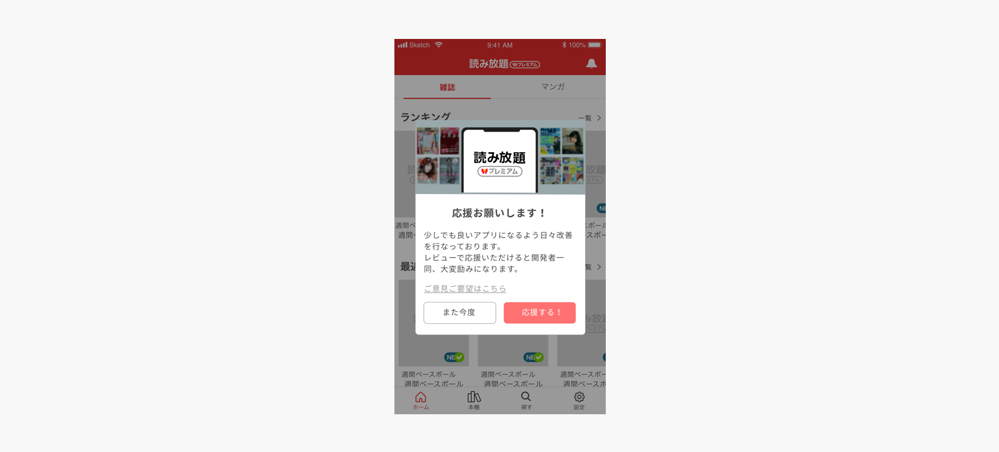

- 概要
- 2019年2月にリリースされた月額課金ユーザー向けサービスのスマートフォン向けアプリのUI/UX改善を担当。
- Improving the UI/UX of smartphone apps, which are services for Paid subscriber released in February 2019.
- 担当：UI作成、施策検討、テスト [role]creation, development, planning
- 使用ツール：sketch / abstract / zeplin / Adobe XD [tool] sketch / abstract / zeplin / Adobe XD
- 期間：2019年10月- 2020年9月
- メンバー：7人（日本人＋ベトナム開発拠点メンバー）
- URL：https://premium.yahoo.co.jp/yomihodai/
- 作業内容
- 仕様策定とUI作成
- 現状の課題を元に、改善案を提案し、リリース後にレビューやDAU、MAUをみて評価。デザインはsketchを用い、atomicデザインの概念を用いてコンポーネントごとにパーツを作成する。ストアでのレビュー、チーム内で思案した内容から新機能の追加、追加の伴う仕様書の作成から承認を得たのちに、デザイン作成を実施。

- 数値改善、UI改善施策の下記を一例
- アプリストア上での評価促進施策
ストアでの評価は、2.9前後の評価から4程度に改善 
- デザインテストマーケティング
- 課金会員に向けて、アプリが訴求内容として有意性があるかを検証するためにテストを実施
-
*画像をクリックすると拡大できます
- スタイルガイド作成
- リリース時に策定できていなかった、デザインのトンマナを整える作業を実施。